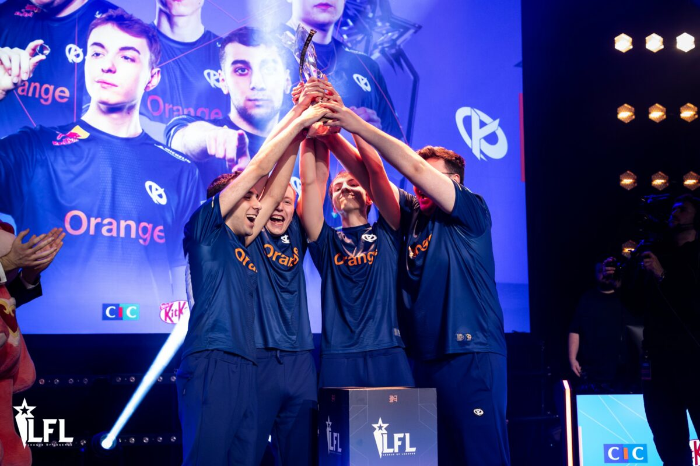

Avec Cabochard, Cinkrof, Saken, Caliste et Targamas unis comme jamais, la Karmine Corp entame une période de domination sans partage sur toute la scène Tier 2 européenne. Fort d'une alchimie retrouvée et d'une confiance inébranlable, le collectif surclasse ses adversaires semaine après semaine en LFL.
Sur la Faille de l'invocateur, chaque membre du roster brille à son poste. Cabochard impose sa loi sur la toplane, Cinkrof dicte le tempo de la jungle avec maîtrise, tandis que Saken contrôle le milieu de carte. Sur la botlane, le duo formé par le prodige Caliste et l'expérience de Targamas fait des ravages à chaque partie.
Les titres s'enchaînent avec une régularité impressionnante. Championne de France devant un Blue Wall en fusion, la Karmine Corp retourne sur la scène européenne des EMEA Masters avec le statut d'équipe à abattre et confirme son rang en soulevant un nouveau trophée continental.
Le message envoyé à toute l'Europe est limpide : la Karmine Corp a fait le tour du Tier 2 et n'a plus rien à prouver à cet échelon. Porté par cette génération dorée et par la ferveur de tout un peuple, le club est désormais prêt à franchir un cap historique vers l'élite européenne.
